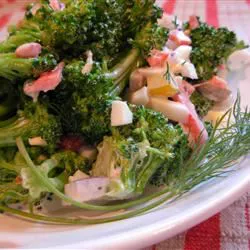

Broccoli Salad

Desription
Ingredients
- 1 pound broccoli, chopped
- 1/4 cup red onion, finely chopped
- 1 cup sharp cheddar cheese
- 1/2 cup crumbled bacon
- 1/2 cup sunflower seeds
- 1/2 cup dried cranberries
- 3/4 cup mayonnaise
- 1/4 cup sour cream
- 1 1/2 tbsp white wine vinegar
- 3 tbsp sugar
Steps
- Combine broccoli florets, cheddar cheese, dried cranberries,
sunflower seeds, and onion in a large bowl.
- In a separate, small bowl, whisk together mayo,
sour cream, vinegar, and sugar until smooth and
well-combined. Add salt and pepper to taste.
- Pour dressing over broccoli combination and toss
or stir well.
- Broccoli salad may be served immediately, but for
best flavor refrigerate for at least one hour before
serving. Make sure to toss broccoli salad thoroughly
again before serving.